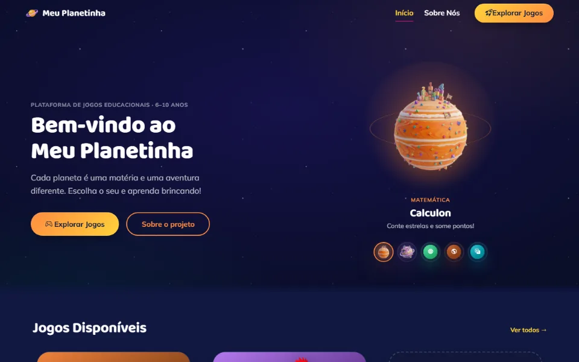

Projeto de extensão · IFSULDEMINAS · desenvolvedor principal
Meu Planetinha
Plataforma de jogos educativos para alunos do 4º e 5º ano, em que cada planeta é uma matéria. Na versão de 2026, desenvolvi quatro jogos novos, baseados em pesquisa sobre aprendizagem:
- Pouso na Reta (Matemática): a criança pousa a nave no ponto certo da reta numérica, cobrindo frações, decimais e porcentagens alinhados à BNCC.
- Detetive de Letrion (Português), Teia Viva (Ciências) e Rumo Certo (Geografia).
- Dificuldade adaptativa, dicas em camadas e narração gravada com voz neural, sem cronômetro nem ranking.
- Folhas de pré e pós-teste para os professores medirem o aprendizado.